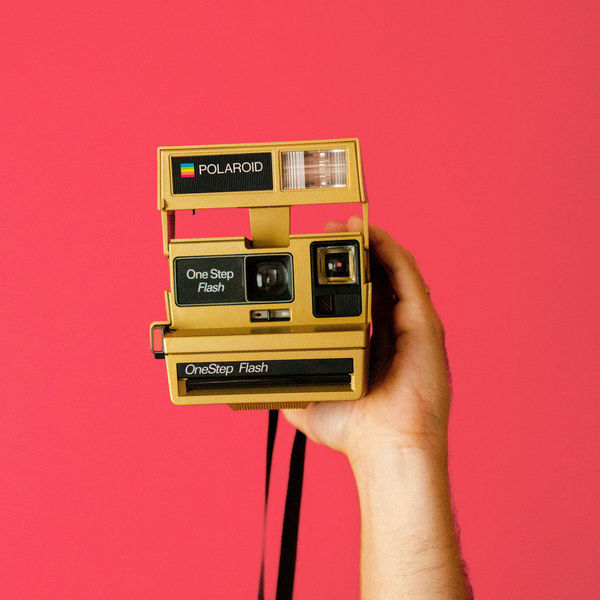

活動經歷

文化交流--與日本高校交流
我們學校與位於日本大阪有一個姊妹校，每年他們畢業旅行都會來到我們學校參訪，而我們也是負責接待他們，在這活動期間讓我 了解了許多兩國文化間得差異性與共同性。而我們這屆畢業旅行也正是到了日本參訪，在這旅程中進行的一日寄宿家庭活動中，具體而微的體驗了日本尋常人家的庶民生活，包含了鄉間風情、生活方式、風俗習慣、食物等。接待我的是大鳥叔叔，雖然彼此有語言上的障礙，但透過比手畫腳與肢體語言的默契仍能有簡單的溝通與互動。.

國際志工社--關懷弱勢
為關懷弱勢團體，於暑假及寒假時隨著社團老師來泰北清邁省的大谷地及邊隆來服務，泰北1949年戰後估計約莫二十萬華人在此生活，大大小小華人難民村共有計百餘個，大谷地及邊隆只是其中的兩個，至今許多的後代子孫正努力得工作來求得更好的生活。每次到泰北服務都是不同的經驗，過程中我們遇到了許多的挫折，不管是語言方面還是教學面，但我們每天晚上都會開會檢討，來解決這些問題，大家都會對當天做不好的地方提出問題和改進的地方，最後統整成一個最好的方法，在這幾次泰北志工服務的過程中讓我了解團結的力量以及如何解決問題，當我們遇到挫折時不要放棄，只要改變一下方法轉個彎就可以使我們戰勝挫折。

拓展國際視野--歐洲遊學團
世界各國間互動越趨頻繁，為了培養國際觀成為更好的自己接
觸異國文化，所以我決定參加了學校的遊學團，藉由在生活及學習上的交流了解彼此並擴開心胸接受不同的文化，進而開拓自己的國際視野及思維，同時增強我的英語能力，也想了解不同國家的教育方式。我們去的學校是Hundred of Hoo Academy，他是一間位於英國偏鄉的學院，出發前我帶著一個既緊張又興奮的心情，因為深怕語言的問題及文化的差異，但在與學伴接洽後，之前的憂慮接一掃而空，在學校裡我跟著學伴一起上課一起玩耍，在過程中我也學到了許多不同的知識和文化。